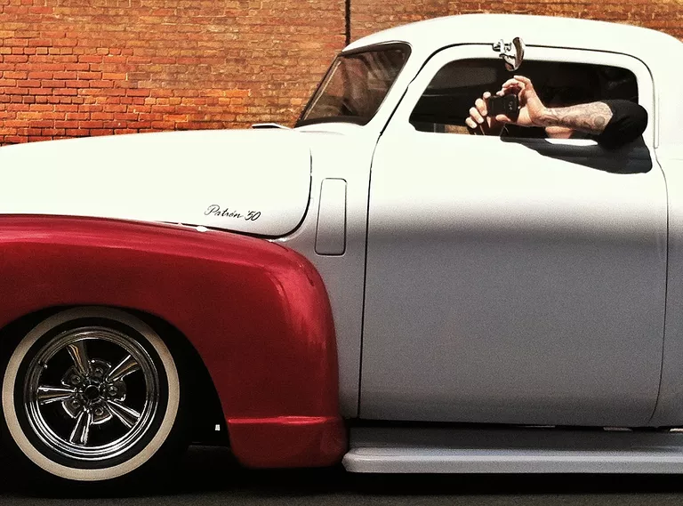

It's All About the Light
It's true. It's all about the light.
That's what will help make a good image a great image. Check out the shadows that the sun makes on subjects. Notice the reflective light off buildings. Practice during the 'golden hour,' the period of time shortly after sunrise or just prior to sunset. Watch how the light from a window falls inside a room at different moments.
The smart phone is not the greatest in low light situations. It's best to capitalize on lighting conditions your device functions under best.
Zoom With Your Feet
Do not ever use the zoom on your smart phone.
I think this is the first step towards taking a bad smartphone picture. If you want to zoom in on something, use your legs and move!
There is technical mumbo jumbo but all you need to know is that the zoom on mobile devices is never good.
Shake Hands, Not Your Phone
Camera shake when taking pictures is very overlooked even on the large cameras. The key to fixing this is to practice how you hold your phone.
Hold it horizontal at all times instead of vertical. This gives you a wider frame. Try burst mode when snapping pictures of moving objects.
Know what you will use for your shutter (either the button assigned, a software shutter button, a tripod and timer, or the volume on your headphones). The idea is to get you to a place where you take clear images with no camera shake. You'll be happy with the result.
It's All About the Angles

Change your perspective on things. I recently had a student whose friend told her that changing angles on a shot is not the best practice for getting a great shot.
I beg to differ. I think changing your angles and your perspective not only gets you a better shot, it also shows how you see the subject.
So get down on the ground, climb up on a high vantage point, move to the side and change your point of view. Try as many different angles on your subject as possible